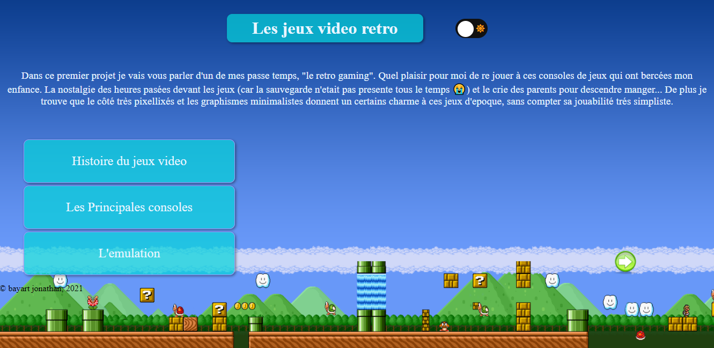
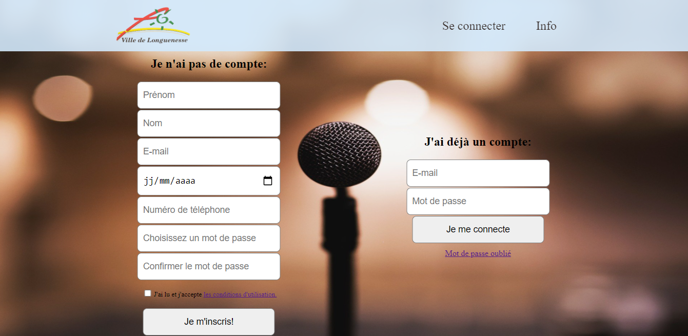

Portfolio
Les projets qui se trouvent dans mon porte folio sont en cours de réalisation, des améliorations seront apportés au fur et à mesure de mon apprentissage
Projet de formation(HTML/CSS)
Projet de formation(HTML/CSS/PHP/BDD)
Site réalisé avec JOOMLA